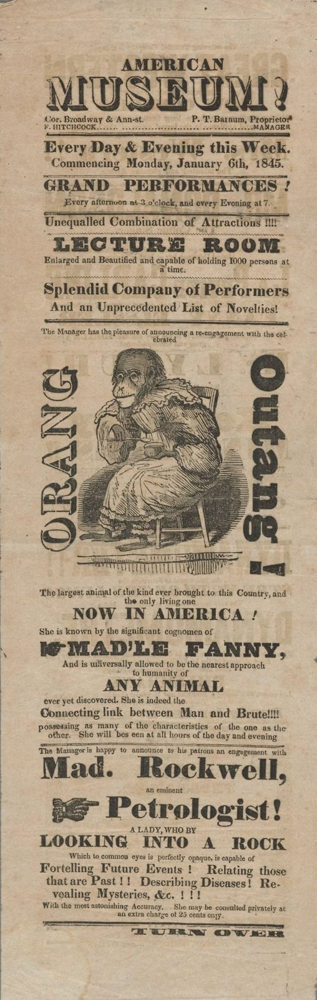

References / Poster / 519
P. T. Barnum’s American Museum handbill, January 1845
A narrow New York handbill for Barnum’s museum that stacks shaded, fat, and Egyptian lines around a stock woodcut of an orangutan.
- Source
- Wikimedia Commons: Houghton TCS 65 – Playbill, Barnum American Museum, 1845
- Creator
- Designer unidentified (Houghton Library); P. T. Barnum, proprietor
- Made
- 1845
- Style
- Victorian typography (agent-proposed, not yet reviewed by a person)
- Moods
- Showy, sensational, busy
- Evidence
- Inspected the Commons image of the Houghton Library copy (Harvard Theatre Collection, TCS 65, Playbills and Programs from New York City Theaters). The original file is 573 × 1805 px; it was viewed through a Commons thumbnail because the original returned HTTP 429, and the stored copy is 508 × 1600 px.
- Reviewed
- Rights
- Open license, stored. License: public domain. Rights policy

Context
Commons describes the file as a handbill advertisement for P. T. Barnum’s American Museum, c. 6 January 1845, in Playbills and Programs from New York City Theaters (TCS 65), Harvard Theatre Collection, Houghton Library, Harvard University, designer unidentified.
The bill names the museum at the corner of Broadway and Ann Street, P. T. Barnum as proprietor, and F. Hitchcock as manager.
Observed
- “MUSEUM!” is set in a shaded open letter with a drop shadow; “AMERICAN” above it in small spaced capitals.
- Below, centred lines alternate between fat face, letterspaced Egyptian (“LECTURE ROOM”), bold roman, and italic, with wavy rules between them.
- A woodcut of an orangutan seated on a chair fills the middle, with “ORANG” and “Outang!” set vertically on each side.
- Pointing hands lead into “MAD’LE FANNY,” and “Petrologist!”.
- “Mad. Rockwell,” is in a fat face with ball terminals.
- Black ink on buff paper, foxed at the edges, with “TURN OVER” at the foot.
Why it belongs
Barnum’s bill shows the showman’s use of the style: each attraction gets a new face, and the sensational words get the heaviest letters.
The vertical lines next to the cut are an exception to the horizontal rule, used to fit a big name beside a picture on a narrow sheet.
Borrow
Put a wavy rule between light announcements and a straight rule between sections.
Wrap a single picture with the name of the thing it shows.
Measured
Machine-extracted by tools/image-traits.py on . Full measurement.
- Mean chroma
- 0.18
- Palette
- #c1a98d 43%
- #cab49a 22%
- #8d7e68 10%
- #7c6f5b 6%
- #9d8c75 6%
- #ab9980 5%
- #645a4a 3%
- #423c33 3%

